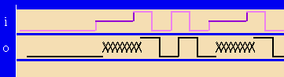

How data is displayed in the timing diagram
The Timing Diagram displays the waveforms for drive data and receive data as follows:
- Drive data:
- Derived from the order of the currently programmed levels.
- Depending on the hardware there can be 2, 3 or 4 levels.
- The third level can be drawn at the top or the bottom of the signal.
- To differentiate the levels, a different color is used for the medium level
(3).
Example:
The third level is 4V, high is 2V and low is 0V, then high will be drawn in the middle.

- Receive data:
- Derived from the setup (menu ) or
- detected at the DUT pin (menu )
A character to the right of the waveform area shows the state at the position of the cursor. For Pin Scale 9G pins, the following table shows the state and its related character.
State at the position of the cursor |
Character to the right of the waveform area |
|---|---|
vil |
0 |
v3l |
z |
vih |
1 |
v3h |
Z |
You can define a new format (menu ) to:
- select which pins and groups are displayed
- define the order in which they are displayed
- when you have defined differential pairs: define the signal algorithm (None, Differential View, Common Mode) for softscope mode
Using the Format menu, you can name, edit or delete your current format. You can select get other formats to display the desired format.
Pins used and unused in executed pattern
The tool differs between pins that are used by the executed pattern and pins not used by that pattern. The Timing Diagram focuses on the used pins. Additionally it displays the first two unused drive pins that appear in the format definition; but they cannot be "formatted". That means, Timing Diagram tool displays no further information but the break waveform, if defined, with a dotted line. All other unused drive pins and all unused receive pins will not be displayed.
Functional changes
- Introduced before SmarTest 6.3.2
- SmarTest 7.1.0: Displaying of drive levels changed
- SmarTest 7.1.4: Modified display of pins